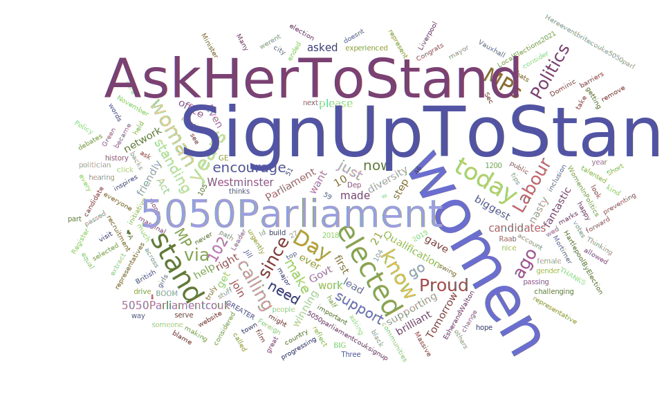

Why should women #SignUpToStand?
A century has passed since women were given the right to enter the corridors of power in the British Parliament under the Parliament (Qualification of Women) Act. Although Constance Markiewicz holds the title of being the first woman elected to the House of Commons in 1918, Nancy Astor was the first female MP to take up a seat at Westminster in 1919. Labour MP Diane Abbott was the first black woman elected to Parliament in the UK.
For 4,503 male MPs, there have only been 491 female MPs in the last 100 years, according to a BBC report.
50:50 Parliament is a cross-party campaign founded by Frances Scott in 2013 - when there were three times more men in Parliament than women - to achieve gender equality in Parliament and other levels of elected office. Scott first launched an online petition which received over 50,000 signatures from people supporting women’s progress in politics.
Under the initiative, #SignUpToStand and #AskHerToStand campaigns were started along with group events, peer-to-peer advice, buddy schemes and ‘Become A Friend’. Currently a 30 + strong team, they have encouraged nearly 2,500 women from various backgrounds and ethnicities to #SignUpToStand by offering various access and entry points.
Scraping tweets related to the campaign on Sign Up To Stand - Ask Her To Stand Day from May 2020 to November 2023 and drawing a comparison to the data of women in Parliament will help analyse the significance of similar initiatives supporting women in politics and power. For this project, I scraped just a little over 2,000 tweets with the hashtag ‘Sign Up To Stand’ using Apify’s tweet-flash scraper export.
The scraping of social media data must meet ethical standards such as preserving user privacy, comply with the terms of service (TOS) of the platform from which the data is collected and legal regulations that protect people's data.
Who are the top tweeters?
Unsurprisingly, the official X account of the 50:50 Parliament campaign takes up a major chunk - nearly 65 per cent - of the total number of posts since 2020. The account regularly posts announcements about community workshops encouraging women to stand for elections as well as retweeting and congratulating female candidates from across parties in various elections in the UK. The account also retweets posts of its new CEO Lyanne Nichols and founder Frances Scott who share posts and statistics about women in power.
Most active users in the campaign
The second top tweeter is also not a big surprise. Scott, who goes by the username @FScott5050, mostly retweets posts related to the SignUpToStand and AskHerToStand campaigns and those posted by 50:50 Parliament. The last original post on X by Scott was on November 21 - AskHerToStand day - where she shared a video of her asking women to 'Sign Up To Stand' on the 50:50 website.
The third most active account is @DollyvanT whose bio states that she is a policy consultant. A quick LinkedIn search gave her full name - Dr Dolly van Tulleken - and her professional and academic background. A visiting researcher of the epidemiology unity at her alma mater, Cambridge University, Tulleken is also the co-founder of 50:50 Parliament's 'Ask Her To Stand' campaign. A staunch advocate for healthy living, her X feed is populated with original posts and retweets criticising ultra-processed foods and demanding better food education in schools. On November 22 this year, she extended support to the 'Ask Her To Stand Up' campaign by pushing out a post urging women to 'Sign Up To Stand'.
The fourth most active user posting the hashtag is Jobaldwintrott, who X bio refers to herself as a 'soul mentor'. The author of 'Being FINE: The Other 'F' Word' talks about mental health, domestic abuse and occasionally politics and women empowerment on her X account.
Tina Bhartwas is a Labour councillor for Letchworth North County and consistently retweets posts relating to her political party. On 'Ask Her To Stand' day 2023, she shared how 50:50 Parliament helped shape her political journey and offered to support women interested in pursuing a career in politics.
Carol Ann, according to the website link shared on the bio of @Zebra_carol, is a business coach and mentor with a focus on women. Along with retweeting posts on wellness and Black history, Ann also occasionally shares on X posts about 50:50 Parliament. In the caption for a post about the 'Sign Up To Stand' campaign, she has also implied that she is a Trustee of 50:50 Parliament.
Jane Whild’s X account describes herself as a 50:50 Parliament Ambassador. She regularly retweets posts about environmental concerns, women’s rights and criticisms tweets of the Conservative government.
Baroness Jenkin or Anne Jenkin co-founded Women2Win - a campaign to increase the number of female Conservative MPs - with Theresa May in 2005. Apart from sharing posts encouraging women to stand for elections , she is also vocal about nutrition and ultra-process foods.
The CWOwestmidlands’s profile states that it supports women standing for the Conservative party. The account regularly shares posts of Conservative leaders, announcements about women winners in politics and workshops that encourage females to stand for office.
Which are the top posts?
The most engaged X post with 1506 likes, 426 retweets, 45 quote tweets and 50 replies is from November 21, 2020, by Caroline Lucas, the country's only Green MP. The Green Party's former leader has 656K followers on Twitter and was elected for Brighton Pavilion in 2010. In June last year, she announced her decision to stand down at the next general election.
It’s 102 years since the Qualification of Women Act gave women over 21 the right to stand for Parliament
— Caroline Lucas (@CarolineLucas) November 21, 2020
Since then, only just over 10% of MPs elected have been women
That's why it's so important to #AskHerToStand & #SignUpToStand
We urgently need @5050Parliament pic.twitter.com/aof89iqI2Z
The second most engaged post was by the former Prime Minister of the UK - Boris Johnson. Sharing a video post of 50:50 Parliament detailing his support for the campaign, Johnson's tweet garnered 766 likes, 103 retweets, 48 quote tweets and 412 replies. With a 4.6 million strong set of followers, a glance through Johnson’s X feed will show consistently high engagement in terms of at least a thousand comments for each post.
So proud to be supporting this initiative #SignUpToStand here: https://t.co/6EEtdrrGSM #5050Parliament #AskHerToStand https://t.co/MHnDwqMCU2
— Boris Johnson (@BorisJohnson) November 21, 2020
With 600 likes and 67k views for the video, Penny Mordaunt - the Conservative MP for Portsmouth North - shared a post in support of the campaign this year on November 21.
The Leader of the House of Commons and Lord President of the Council adopted a personalised approach to encouraging women to stand for Parliament by sharing her own journey to politics. The post gathered 80 retweets, 28 quote tweets and 340 replies.
We can all encourage and support brilliant people, who might not see themselves in public office, to go for it. Today #AskHerToStand are on a mission. https://t.co/cbbUV7hFWF #SignUpToStand pic.twitter.com/7fb4EXZ3hj
— Penny Mordaunt (@PennyMordaunt) November 21, 2023
A video post in 2020 by the X account of 50:50 Parliament showed Angela Rayner, Deputy Labour Leader, expressing her party's support for the campaign. The post got 558 likes, 115 retweets, 30 quote tweets and 90 replies.
Today is #AskHerToStand day💥
— 50:50 Parliament (@5050Parliament) November 21, 2020
Dep Leader of @UKLabour @AngelaRayner says that Labour backs #5050Parliament & is proud that 104 Labour MPs are women (51% ) now they want to build even GREATER diversity & inclusion!
Calling ALL women to #SignUpToStand: https://t.co/2Z0ltId8QO pic.twitter.com/QG7VcBvaPW
Sharing her personal story, Liberal Democrat leader Monica Harding's post on 'Sign Up To Stand' day this year was the fifth most engaging with 369 likes, 110 retweets, 3 quote tweets and 11 replies.
It's #AskHerToStand day. In 2018 I was asked to stand. I’d never considered it but ended up w biggest swing in the 2019 GE, held Foreign Sec Dominic Raab to account & made #EsherandWalton a marginal. So you go do it too - change stuff. #SignUpToStand #5050Parliament pic.twitter.com/Mot6vzI3Zw
— Monica Harding (@monicabeharding) November 21, 2023
The top 20 tweets may be grouped under three broad categories - data-driven, personalised and supportive while all tweets carry a similar theme of inspiration and powerful women.
The hashtags #SignUpToStand and #AskHerToStand are the two pillar hashtags of the campaign mostly used together to strengthen the message on social media and increase the chances of it going viral, especially on the particular day.
Tweet Trends
The year 2021 saw the most number of X posts for the campaign - 653 out of the overall 2011 tweets spread across 2020 and 2023. November has seen the most spike in the number of X posts for #SignUpToStand as the ‘Ask Her To Stand’ Day falls on the 21st of the month. However, from 358 X posts in November 2020 to 119 in 2023, the campaign seems to be gradually losing steam in social media. The tweet rate is the highest - 12 per cent - on 'Sign Up To Stand' day in November 2020 compared to the last campaign day in 2023. In 2020 and 2021, August was the least active month for the campaign on social media while 2022 and 2023 (respectively) saw January and September producing the lowest number of posts.
Tweet rate on November 21 from 2020 - 23
Top 5 Tweets
| User | Text | Likes | Followers |
|---|---|---|---|
| @CarolineLucas | "It’s 102 years since the Qualification of Women Act gave women over 21 the right to stand for Parliament Since then, only just over 10% of MPs elected have been women That’s why it’s so important to #AskHerToStand & #SignUpToStand We urgently need @5050Parliament" | 1506 | 635.7K |
| @BorisJohnson | "So proud to be supporting this initiative #SignUpToStand here: 5050Parliament.co.uk/signupt… #5050Parliament #AskHerToStand" | 766 | 4.6M |
| @PennyMordaunt | "We can all encourage and support brilliant people, who might not see themselves in public office, to go for it. Today #AskHerToStand are on a mission. 5050parliament.co.uk/sign-up… #SignUpToStand" | 600 | 247.5K |
| @5050Parliament | "Today is #AskHerToStand day Dep Leader of @UKLabour @AngelaRayner says that Labour backs #5050Parliament & is proud that 104 Labour MPs are women (51% ) now they want to build even GREATER diversity & inclusion! Calling ALL women to #SignUpToStand: 5050parliament.co.uk/signupt…" | 558 | 21.7K |
| @MonicaHarding | It’s #AskHerToStand day. In 2018 I was asked to stand. I’d never considered it but ended up w biggest swing in the 2019 GE, held Foreign Sec Dominic Raab to account & made #EsherandWalton a marginal. So you go do it too - change stuff. #SignUpToStand #5050Parliament | 369 | 15.9k |
Words have power
The overarching theme is women empowerment and sisterhood in the top 20 X posts. While some posts urge the public to make a change by comparing statistics of women in politics since the passing of the Qualification of Women Act, others share personal stories in a bid to motivate women who are anxious about taking the first step. The top posts also saw women sharing their success stories which will further encourage others to run for public office.
The language of the posts indicates positivity with words like kind, talented, change, hope, encourage, proud, brilliant, happy, progressing, network, fantastic and inspire populating the feed. An inclusive environment is also promoted with words like diversity, equal, representative, gender, communities, Black, and marginal also being part of the posts.
Interestingly, posts in support of the campaign cut across political parties as leaders buried ideological differences to unite for equality in the male-dominated Parliament.
Conclusion
The number of women MPs in parliament surpassed 5 per cent for the first time in 1987. The highest jump was in 1997 when the proportion of women MPs doubled from 9 per cent to 18 per cent. After the Sign Up To Stand campaign was launched in 2013, the 2015 election saw a rise from 22 per cent to 30 per cent. In the 2019 general election, the largest-ever proportion of women MPs - 220 out of total 650 - entered the House of Commons hitting an all-time high of 34 per cent. Of the 140 MPs elected for the first time in 2019, 57 were women. As of December 2023, there are 225 women MPs.
Women are more likely than men (75 per cent versus 54 per cent) to say that they decided to try to become an MP because someone asked them to, as per a 2018 study by Fawcett Society, which makes ‘Sign Up To Stand’ a key campaign to encourage female participation in politics. At least 40 per cent of male MPs planned their political career six months ahead of being selected for their seat compared to a merely 18 per cent among women, the report said.
Journalists frequently use Twitter for different forms and purposes of research like finding topic ideas, statements of eyewitnesses and sources for further investigation, continuous monitoring of prominent sources or building expert networks. Researchers use Twitter content (both tweets and profile information) to examine all aspects of human interaction.
Twitter scraping can help journalists trace certain patterns in topics of discussion, conduct sentiment analysis, track campaign-specific hashtags and monitor live events. This helps in comprehensive coverage of news and trending topics while offering a bird's eye view of how people are interacting with the content.